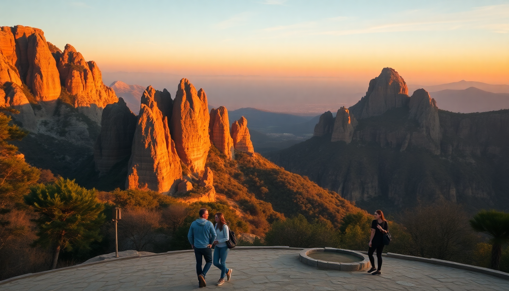

Best Day Trips from Barcelona: Montserrat & Girona

I spent a week based in Barcelona’s Eixample neighborhood, and while the city itself is a feast, the real payoff came when I got out. A day trip from Barcelona is simple—trains run like clockwork, and most destinations are under 90 minutes. Here’s what I actually did, what I’d skip, and where to eat when you get there.
Why take a day trip from Barcelona?
Barcelona is compact for a major city, but after three days of Gaudí and tapas bars, the crowds at La Boqueria start to feel the same. A day trip gives you a reset. You get real countryside, medieval streets without selfie sticks, and a sense of Catalonia beyond the Sagrada Família queue. I found that leaving at 8 AM and being back by dinner left me more energized than another day in the city.
Is Montserrat worth the hype?
Yes, but with a caveat. The monastery itself is tourist-heavy by 11 AM. I took the R5 line from Plaça d’Espanya to Montserrat-Aeri, then the cable car up. The ride alone—watching the jagged peaks rise from the mist—justified the trip. Inside the basilica, the Black Madonna (La Moreneta) is the draw, but the line to touch her hand can be 45 minutes. I skipped it and walked the Sant Jeroni trail instead. The summit view takes about an hour and a half from the monastery, and you can see all the way to Mallorca on a clear day.
- Take the R5 train from Plaça d’Espanya (buy the combined train + cable car ticket at the station machine)
- Eat at the self-service restaurant near the monastery—decent paella, but the Montserrat market has better cheese and honey
- Visit the Museu de Montserrat for two Miró paintings and a Caravaggio; it’s small and rarely crowded
- Avoid the funicular to Santa Cova unless you’re a devout hiker—it’s a steep walk with little payoff
What’s the best way to see Girona in a day?
Girona is my top pick. Take the AVE high-speed train from Barcelona Sants—38 minutes, no reservations needed if you buy a flexible ticket. I arrived at 9 AM and had the Jewish Quarter (El Call) almost to myself. The narrow alleys and stone archways feel like a movie set, because they are—it’s where Game of Thrones filmed Braavos. Climb the Cathedral of Girona’s 90 steps for the widest Gothic nave in the world, then cross the Eiffel Bridge (yes, Gustave Eiffel built it before the tower) for a postcard view of the colorful houses along the Onyar River.
- Walk the Muralles (city walls) for a 2-km loop with views over the old town
- Lunch at Txalaka for pintxos—the mushroom and Idiazábal cheese skewer is addictive
- Visit the Arab Baths (€3 entry, 10 minutes max)
- Skip the Museu d’Art unless you’re a Goya completionist—it’s dry
Figueres or Sitges: which is the better second trip?
If you’re into art, Figueres is non-negotiable. I took the regional train from Sants (1 hour 40 minutes) to the Dalí Theatre-Museum. The building itself is a surrealist joke—giant eggs on the roof, a Cadillac in the courtyard. Inside, the Mae West Room (a face assembled from a sofa, fireplace, and lips) is the highlight. Plan 2.5 hours inside. The town of Figueres is otherwise unremarkable; I grabbed a quick lunch at Restaurant La Fonda (€12 menu del día) and caught the 3 PM train back.
Sitges is the opposite: all beach and no museum. I went on a Sunday, and the R2 Sud train from Passeig de Gràcia took 35 minutes. The Church of Sant Bartomeu sits right on the waterfront, and the Carrer del Pecat (Sin Street) is lined with chiringuitos serving grilled sardines. If you want to swim, the Platja de la Bassa Rodona is the most sheltered cove. Sitges is better as a half-day—I was bored by 4 PM.
- Figueres: Dalí Theatre-Museum only; eat at La Fonda or Celler de la Roca (book ahead)
- Sitges: Platja de Sant Sebastià for quieter sand; El Trull for vermut and anchovies
- Both: buy train tickets on Renfe’s app to avoid station queues
Can you visit Tarragona in half a day?
Yes, and I’d do it again. The R2 Sud train from Sants reaches Tarragona in 1 hour. The Roman amphitheater overlooks the Mediterranean—you can stand where gladiators fought with the sea as a backdrop. The Balcó del Mediterrani viewpoint is a five-minute walk from the ruins. I spent two hours on the Rambla Vella people-watching over a plate of calçots (grilled spring onions) at Barquet, then walked the Passeig Arqueològic along the Roman walls. Tarragona feels lived-in, not curated. The Cathedral of Tarragona has a Gothic cloister with peacocks, and entry is €5.
- Roman amphitheater (€3.30, or free with the Tarragona Card)
- Circ Romà (the chariot racing track) is mostly ruins but fascinating
- Eat at La Cuina de la Pili for seafood fideuà—it’s cash-only
- Skip the Museu Nacional Arqueològic unless you’re a Latin inscription nerd
What about a wine trip to Penedès?
I’m not a big wine guy, but the Penedès region is 45 minutes west by train. I took the R4 line to Vilafranca del Penedès, then walked 20 minutes to Bodegas Torres. The tour covers cava production from grape to bottle, and the tasting includes a 2019 Gran Coronas that actually made me buy a bottle for home. The Vinseum (Wine Museum) in Vilafranca has an interactive map of all 11 DOs in Catalonia, which helped me plan a future trip to Priorat.
- Bodegas Torres tour (€22, book online for English slots)
- Vinseum (€7, includes a glass of cava)
- Lunch at Cal Ton in Vilafranca for grilled botifarra sausage—sit on the terrace
- Use Renfe Cercanías (commuter trains) for the cheapest fare; no reservation needed
FAQ
Is it better to book a guided tour or go independently? I prefer independent travel for flexibility, but Montserrat is an exception—the guided tours often include the funicular to Sant Joan (which saves a steep walk) and skip the ticket line. For Girona and Tarragona, the train is so easy that a guide feels wasteful. If you’re pressed for time, a GetYourGuide half-day to Montserrat works well; I did it once and the guide pointed out the Via Crucis statues I would have missed.
What’s the best time of year for day trips from Barcelona? April through June and September through October. July and August are punishing—Montserrat’s trails get direct sun, and Girona’s old town becomes a furnace. I went in late May, and the crowds were manageable. Winter (November to February) is fine for Girona and Tarragona, but the cable car to Montserrat sometimes closes in high winds.
Can I visit both Montserrat and Girona in one day? Technically yes, but I’d advise against it. You’d need to leave Barcelona by 7 AM and you’d spend more time in transit than at either site. I tried this once and ended up rushing through Girona’s Jewish Quarter in 45 minutes. Pick one and do it well.
Conclusion
- Montserrat is worth it for the hike and the views, not the monastery crowds—go early and take the Sant Jeroni trail.
- Girona is the best all-around day trip: trains are fast, food is excellent, and the Jewish Quarter feels genuinely old.
- Figueres is a one-trick pony (Dalí), but that trick is world-class; Sitges is a beach break for lazy afternoons.
- Tarragona delivers Roman ruins without the tourist circus of Rome or Pompeii.
- Penedès works best if you’re already a wine drinker; otherwise, skip it for another city trip.